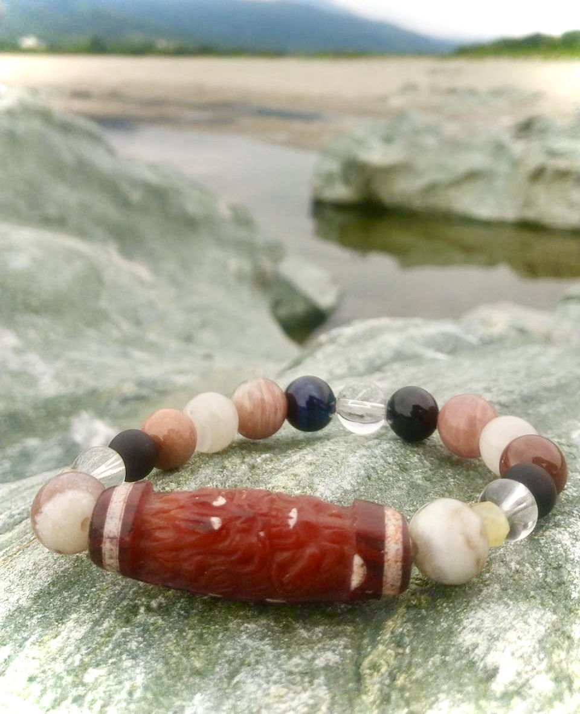

石はあなたの『意志』
そして
Natueの『遺志』
ordermade
『依頼者様の持つ意志』を汲み
『天然石に刻まれた時』を思い
一粒一粒を丁寧に選びます
石はあなたの『意志』でもあり、Natueの『遺志』
ご自分の意志にあわせてつくることは未来を後押しする応援団になります。
portfolio


私について
四方志保（しかた しほ）
屋号：叶屋（かのうや）
私は幼いころから目には見えないエネルギを体感で感じ取る性質がありその繊細さゆえに苦労も重ねてきました。
ですが、今は自分を深く理解しその感覚を 「人のために役立てたい」と思うようになりました。
私の鑑定は、ただ未来を当てるのではなく、 「あなたの心を癒やし、力強く生きていくためのヒントをお伝えする」ことを大切にしています。
相談について
鑑定スタイル
対面でゆっくりとお話を伺いながら、オラクルカードを使って「過去・現在・未来」を読み解きます。 そこに私が受け取るインスピレーションを重ね、 より良い未来を創り出すための具体的なアドバイスをお届けいたします。
私の鑑定スタイルは、ただ未来を当てるのではなく、 「あなたの心を癒やし、力強く生きていくためのヒントをお伝えする」ことを大切にしています。